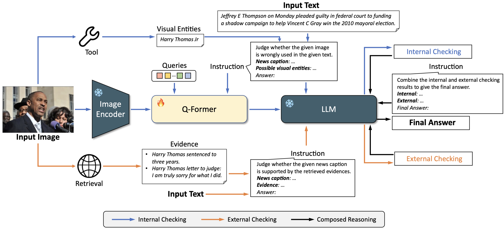
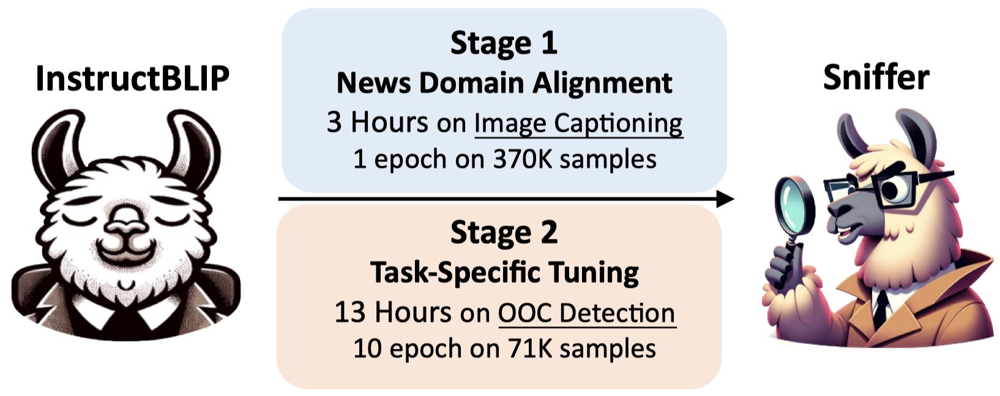
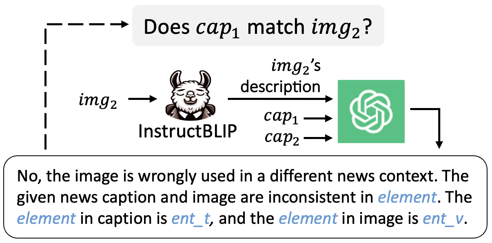
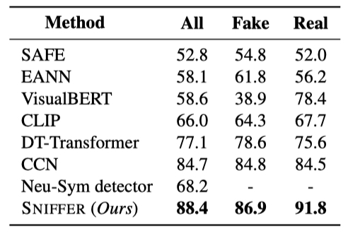
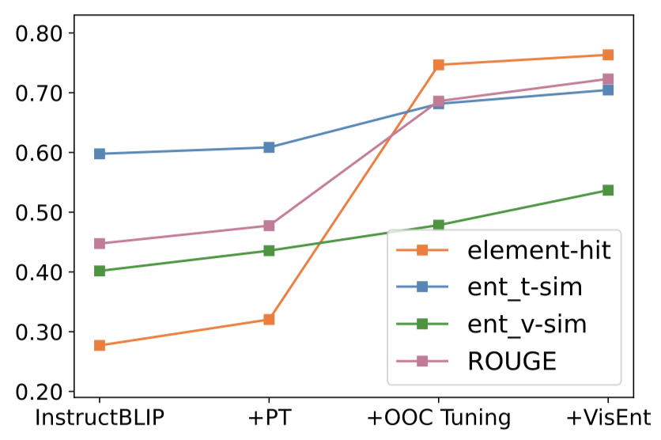
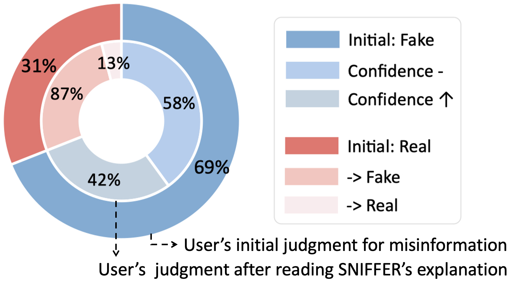

Abstract
Misinformation is a prevalent societal issue due to its potential high risks. Out-Of-Context (OOC) misinformation, where authentic images are repurposed with false text, is one of the easiest and most effective ways to mislead audiences. Current methods focus on assessing image-text consistency but lack convincing explanations for their judgments, which is essential for debunking misinformation. While Multimodal Large Language Models (MLLMs) have rich knowledge and innate capability for visual reasoning and explanation generation, they still lack sophistication in understanding and discovering the subtle crossmodal differences. In this paper, we introduce SNIFFER, a novel multimodal large language model specifically engineered for OOC misinformation detection and explanation. SNIFFER employs two-stage instruction tuning on InstructBLIP. The first stage refines the model's concept alignment of generic objects with news-domain entities and the second stage leverages language-only GPT-4 generated OOC-specific instruction data to fine-tune the model's discriminatory powers. Enhanced by external tools and retrieval, SNIFFER not only detects inconsistencies between text and image but also utilizes external knowledge for contextual verification. Our experiments show that SNIFFER surpasses the original MLLM by over 40% and outperforms state-of-the-art methods in detection accuracy. SNIFFER also provides accurate and persuasive explanations as validated by quantitative and human evaluations.
 Framework
Framework

Architecture of the proposed framework SNIFFER. For a given image-text pair, SNIFFER conducts a two-pronged analysis: (1) it checks the consistency of the image and text content (internal checking), and (2) it examines the relevance between the context of the retrieved image and the provided text (external checking). The outcomes of both these verification processes are then considered by S NIFFER to arrive at a final judgment and explanation.
 Multimodal Instrucion-Following Data
Multimodal Instrucion-Following Data

Instruction Tuning Process

Task-Specific Instruction Construction
(with judgment and explanation)
 Performance
Performance
⭐️ Accurate OOC detection

⭐️ Precise Explanation

⭐️ Persuasive Explanation

BibTeX
@article{qi2023sniffer,
author = {Qi, Peng and Yan, Zehong and Hsu, Wynne and Lee, Mong Li},
title = {SNIFFER: Multimodal Large Language Model for Explainable Out-of-Context Misinformation Detection},
journal = {arXiv preprint arXiv:},
year = {2023},
}